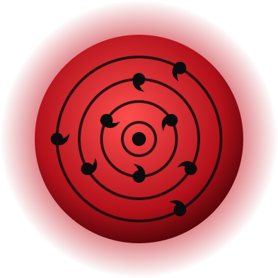
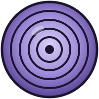

Madara Uchiha
Fundador de Konoha, rival de Hashirama Senju e criador do Plano Olho da Lua.
Saiba mais
Sobre

Madara nasceu na época das guerras entre clãs. Ainda criança conheceu Hashirama Senju e os dois sonharam com uma vila sem guerras.
Juntos fundaram Konoha, mas depois da morte do irmão Izuna e da desconfiança contra os Uchiha, Madara saiu da vila e decidiu criar a paz com uma ilusão eterna.
Clã Uchiha Rival: Hashirama
Habilidades
Sharingan
Com os olhos de Izuna ele conseguiu o Mangekyō Sharingan Eterno.

Rinnegan
Despertou o Rinnegan usando as células de Hashirama.
Susanoo
Um guerreiro gigante de chakra azul que corta montanhas.
Gunbai
Leque de guerra que bloqueia e devolve os ataques.
Trajetória
- Funda Konoha junto com Hashirama.
- Luta contra Hashirama no Vale do Fim.
- Se esconde e manipula Obito.
- Volta na Quarta Guerra Ninja e luta contra os cinco Kage.
- Lança o Tsukuyomi Infinito, mas é traído por Zetsu Negro.